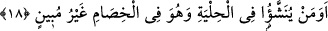
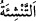

18. Süs içinde yetiştirilip savaş edemeyecek (tartışmayı ve kavgayı
beceremeyecek) olanı mı istemiyorlar? (Böyle birini Allah’ın parçası mı
sayıyorlar?)
“Süs içinde yetiştirilip savaş edemeyecek,” düşüncesi, görüşü zayıf ve eksik olduğu
için erkek gibi dâvâsını arz ve takdime, delilini ikâme etmeye muktedir olamayacak
“olanı mı istemiyorlar?”
Bu ifâde, müşriklerin bu tutumunu tekrar reddetmektir. Âyetin başındaki soru hemzesi,
vakayı kabullenmemek ve çirkinliğini ortaya koymak içindir. “
/tenşie”, terbiye
etmek, eğitmek ve öğretmek demektir. “Hilye” insanın süslenip püslendiği şeydir.
Kelime sözlük olarak ârâyiş, güzellik, zînet, cemâl ve tezyîn anlamlarına gelir. Çoğulu
“hilâ” ve “hülâ” dır. Mânâ: “Yahut zîynet içinde yetiştirilip kendi işini bizzat üstlenip
başarmaktan âciz olanı yani kızları mı Allah’ın çocuğu yaptılar?” demektir.
Müftî Sa’di şöyle demiştir: Belki de ibârenin takdîri şöyledir: “Böyle büyük bir şeye
cüret ettiler ve kızları Allah’ın çocuğu kabul ettiler.”
Kâşifî der ki: Eğer bir kimse süs ve zînet içinde, yani nazlı bir şekilde yetiştirilirse o
kimsede meydanda savaşma gücü olmaz.
Kız çocuğu, kendisiyle dâvâlaşıp mücâdele edenle onun kadar mücâdele edemez. Yani
o, genelde ve âdet olarak insanların neredeyse âzâde olamadığı tartışmalarda zayıf
kalır. Çünkü kız çocuğu, erkek kadar dâvâsını savunmaya ve delillerini ileri sürmeye
muktedir değildir. Hatta çoğu zaman kendi yararına konuşacak yerde kendi zararına bile
konuşabilir. Ancak genel olarak durum böyledir. Yoksa bütün kız çocukları böyledir
denilemez. Çünkü kızlardan öyle fesâhat ehli ve fazîletli olanlar vardır ki, erkekten çok
daha üstün olabilirler.
Ahnef şöyle demiştir: Ebûbekir (r.a.)’ın konuşmasını dinledim, konuştu bitirdi.
Ömer’i Osman’ı ve Ali’nin (r.a.) konuşmalarını dinledim. Hayır, Allah’a yemin olsun ki
ben Âişe’den daha beliğ konuşan birini görmedim.
Muâviye (r.a.) der ki: Hz. Âişe’den daha belağatlı birini görmedim. Ben bir kapıyı
kapayıp o açmak istemişse açmıştır. Yine ben bir kapıyı açtım da o kapatmak istediyse
illa kapatmıştır. Peygamberimiz (s.a.) onun hakkında: “O Ebûbekrin kızıdır”[150]
buyurmuş, bununla Âişe’nin güzel ve derin anlayışını, fasih ve belağatli konuşmasını
bildirmek istemiştir.
Kâşifî şöyle demiştir: Araplar cesâret ve fesâhat ile övünürlerdi. Bu iki haslet
genellikle kadınlarda bulunmazdı. Bu sebeple Allah Teâlâ: “Kimde cesâret ve fesâhat
bulunursa Allah Teâlâ onu çocuk mu edinecek?”
Keşfu’l-esrâr’da şöyle denilmektedir: Bu âyette altın ve ipeğin kadınlara helâl oluşu
ve erkeklerin kadınların zinetleriyle süslenmelerinin yerilmesi söz konusudur.
Bahru’l-ulûm’da şöyle denilmektedir: Bu âyette akl-ı selim sahibi olan herkes için